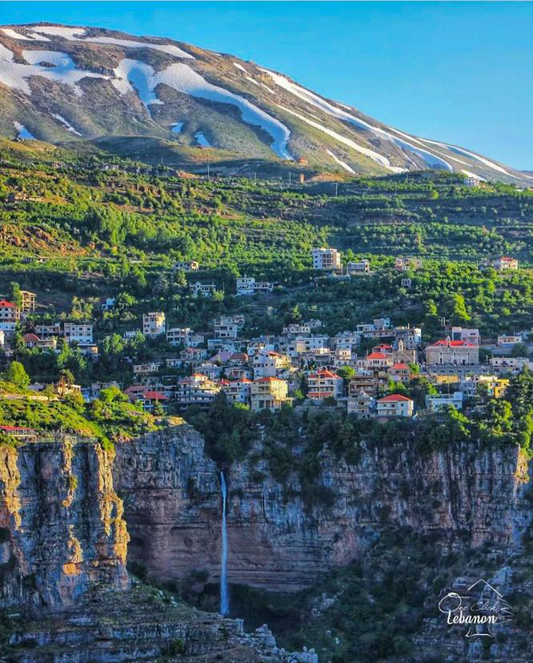
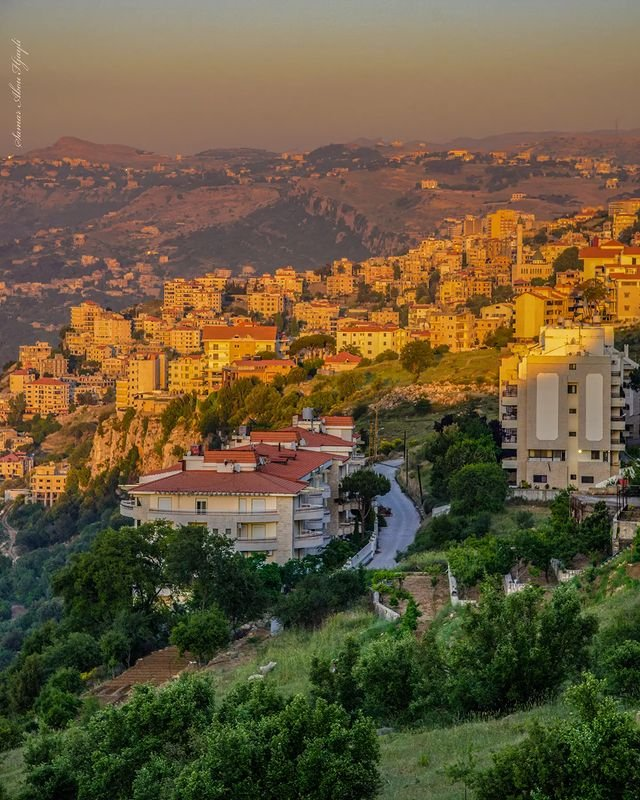
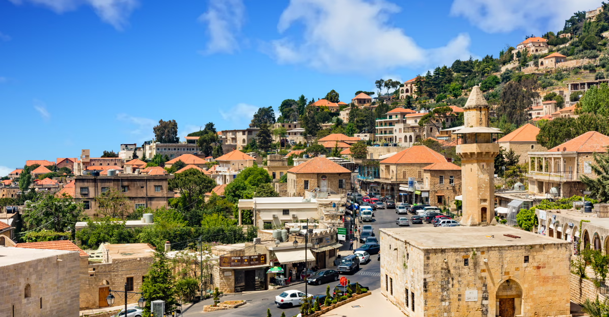
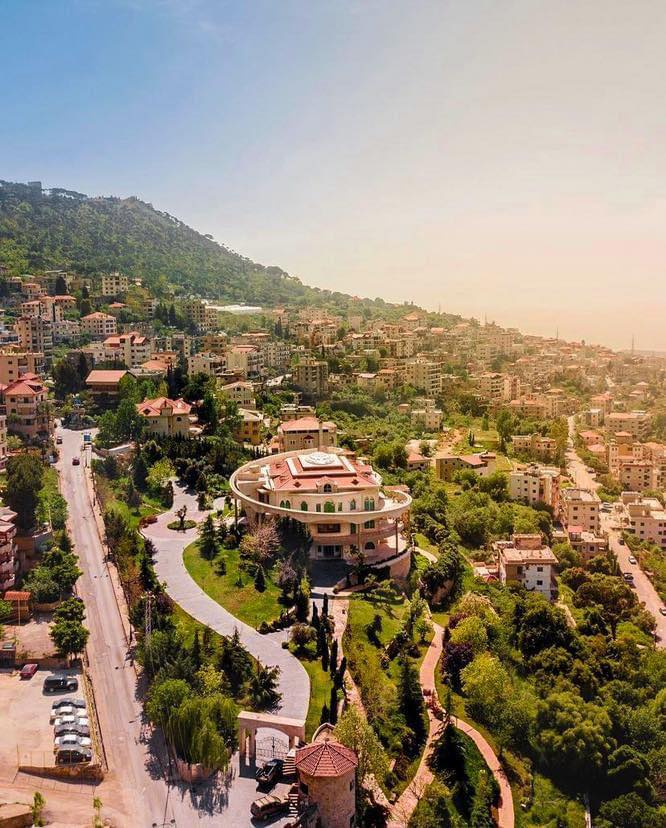
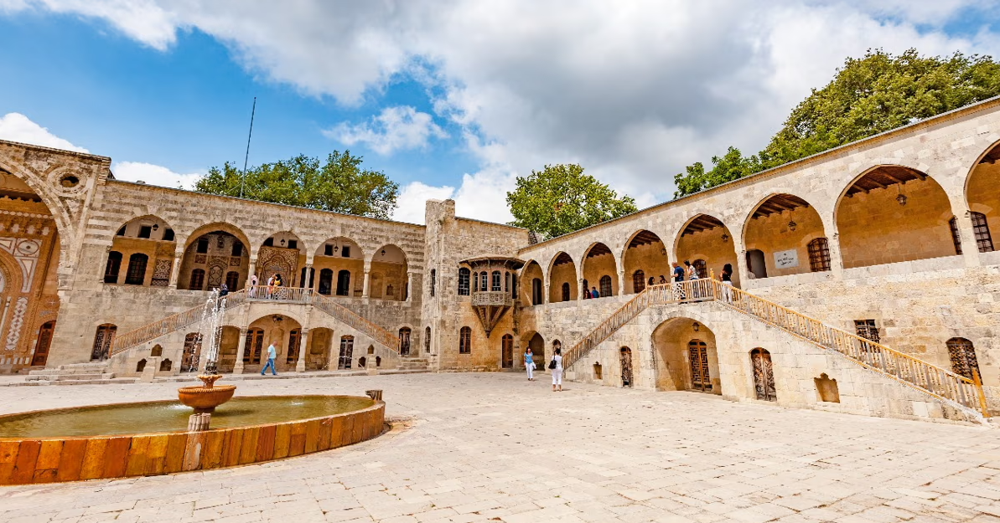
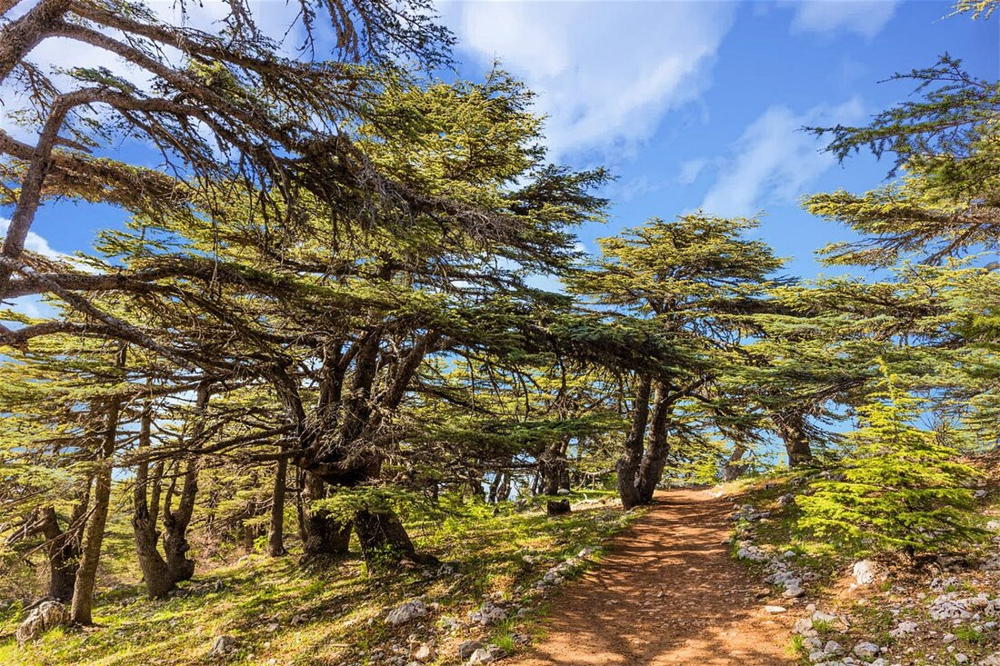
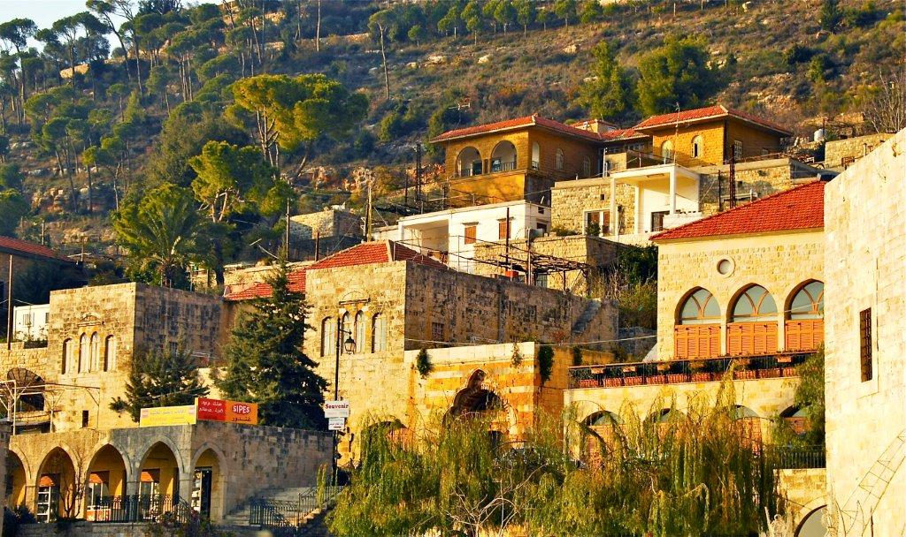
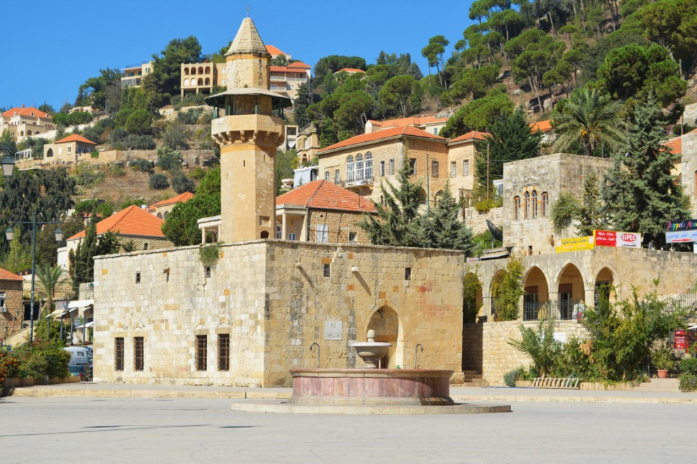
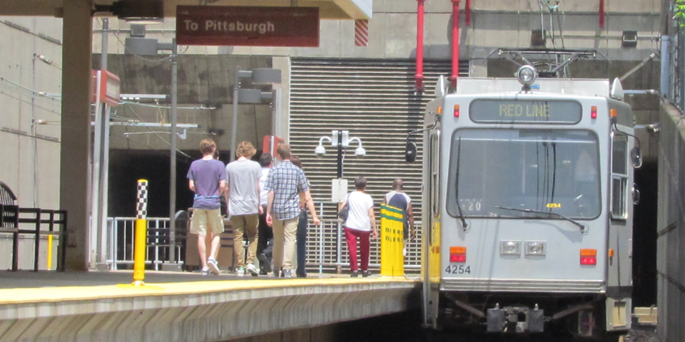
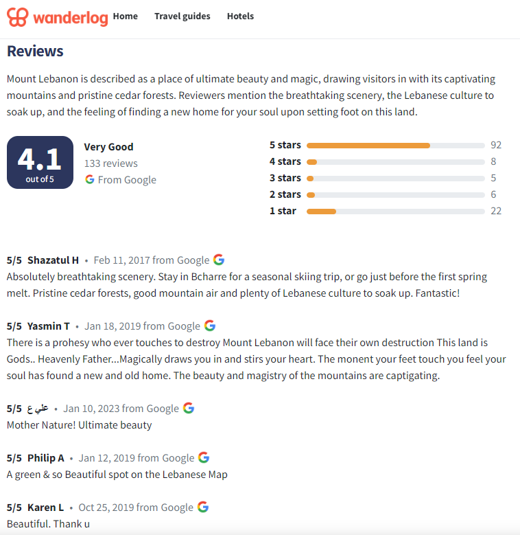

Ministry of Tourism Lebanon
DISCOVER LEBANON
Mount Lebanon Governorate wraps around the Lebanese Mountain range in the center of the country, stretching from the hills just east of Beirut all the way south toward the Chouf and Aley districts. It is Lebanon's most populous governorate and arguably its most culturally layered, a patchwork of Maronite Christian, Druze, and Sunni communities that have lived side by side on these mountains for centuries.
The landscape is defined by the mountain itself, terraced hillsides planted with olive trees, fruit orchards, and vineyards; deep valleys carved by rivers; and stone villages that seem to grow directly out of the rock. The Chouf district in the south is particularly striking, with its dense forests of cedar and pine and its dramatic views eastward over the Beqaa Valley.
Summers in the mountain villages are cool and breezy, and a long tradition of Lebanese families retreating from the coastal heat to the mountains explains why so many villages here are vibrant in summer but quiet in winter. The highest peaks receive significant snowfall, and several ski resorts operate in the upper elevations.


Baabda is both the administrative capital of the governorate and home to the Baabda Palace, the official residence of the President of Lebanon. Situated on a ridge overlooking Beirut and the sea, the town commands one of the most panoramic views in the country. It is a quiet, dignified town that carries the weight of Lebanese political history in its streets.

One of the most beautiful villages in all of Lebanon, Deir el Qamar served as the seat of the Lebanese Emirate for over two centuries. Its central square is surrounded by 17th and 18th-century palaces, a silk khan, a mosque, and churches, all built from the same warm golden limestone that glows at sunset. Walking through it feels like stepping directly into Lebanon's Ottoman-era past.

Beiteddine is famous for its magnificent early 19th-century palace, one of the finest examples of Lebanese architecture in existence. Built over 30 years by Emir Bashir II, the Beiteddine Palace is a breathtaking complex of courtyards, mosaic floors, arched halls, and terraced gardens. Every summer it hosts the prestigious Beiteddine Art Festival, drawing international performers to one of Lebanon's most spectacular stages.

Known as the "Bride of the Mountains," Aley sits at 900 meters above sea level just east of Beirut and has long been the city's favorite summer escape. Its cool air, pine forests, and lively town center make it a beloved destination from June through September. The town is a mix of traditional Lebanese mountain architecture and modern restaurants and cafés, all set against sweeping views of the coast far below.

Built between 1788 and 1840 by Emir Bashir II, Beiteddine Palace is widely considered Lebanon's finest historic building. Its three interconnected courtyards, each grander than the last, are decorated with intricate geometric tilework, carved stone arches, and hand-painted ceilings. The palace museum houses a world-class collection of Byzantine mosaics excavated from across Lebanon. Every summer, the palace's outer courtyard becomes the stage for the Beiteddine Art Festival, a magical setting for world-class performances.
The Chouf Cedar Reserve is the largest nature reserve in Lebanon, covering over 550 square kilometers of the southern mountain range. It is home to the country's largest remaining cedar forests, as well as wolves, wild boar, golden eagles, and hundreds of plant species. Hiking trails wind through the reserve at various levels of difficulty, and the views from the higher elevations, stretching from the Beqaa Valley to the Mediterranean, are among the finest in Lebanon.


The central square of Deir el Qamar is one of the most perfectly preserved Ottoman-era public spaces in Lebanon. Surrounded by palaces, a 17th-century mosque, a Maronite church, and a silk khan, all built in the same golden stone, the square has changed very little in three centuries. On quiet evenings, when the light turns warm and the tourists have gone, it is one of the most atmospheric places in the entire country.
Mount Lebanon is home to dozens of ancient monasteries and churches scattered across the mountain ridges and valleys. Many date back to the early centuries of Christianity and served as refuges for Maronite communities during periods of persecution. The monasteries of Deir el Qamar, Beit Mery, and the wider Metn and Chouf districts are open to visitors and offer a profound connection to the spiritual life that has shaped this mountain for over a thousand years.

Mount Lebanon Governorate directly borders Beirut to the east and south, making it one of the most easily reached regions in the country. Most destinations are between 20 minutes and an hour from the capital by car.
All international arrivals land at Beirut–Rafic Hariri International Airport. Baabda and the northern parts of the governorate are reachable within 20 to 30 minutes from the airport. Beiteddine and the Chouf are roughly an hour's drive south.
A car is strongly recommended for exploring Mount Lebanon. The main road south from Beirut through Baabda toward Beiteddine and Deir el Qamar is well-paved and scenic. Mountain roads branch off to villages throughout the region, and the drives themselves are often as rewarding as the destinations.
Service taxis and minibuses run from Beirut to major towns like Aley and Baabda throughout the day. For more remote villages and the Chouf district, a private car or organized day tour is the most practical option.
Mountain roads in the higher elevations can be narrow, steep, and icy in winter. Some villages become difficult to reach without snow chains between December and February. Always check conditions before heading to the upper Chouf or ski areas.

Mount Lebanon is where Lebanon's soul lives. The mountain villages, the ancient monasteries, the terraced hillsides, and the long tradition of summer retreats all speak to a way of life that has been shaped by this extraordinary landscape for centuries.
Arrive at Beiteddine Palace in the morning before the crowds, walk through the three courtyards in silence, and try to imagine the Emir who spent 30 years building it.
Spend an afternoon in Deir el Qamar's village square, have a coffee, watch the light change on the old stone buildings, and feel three centuries of Lebanese history around you.
Hike through the Chouf Cedar Reserve on a clear day, when the views from the upper trails stretch all the way to the sea on one side and the Beqaa Valley on the other.
Drive the mountain road from Aley through the Metn villages in autumn, when the trees turn and the air is sharp and the whole mountain glows with color.
If visiting in summer, attend a performance at the Beiteddine Art Festival, sitting in that palace courtyard under the stars with live music is one of Lebanon's great experiences.
